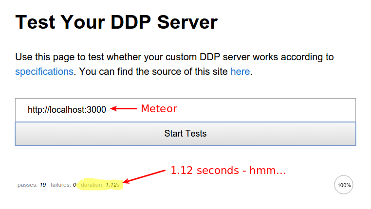
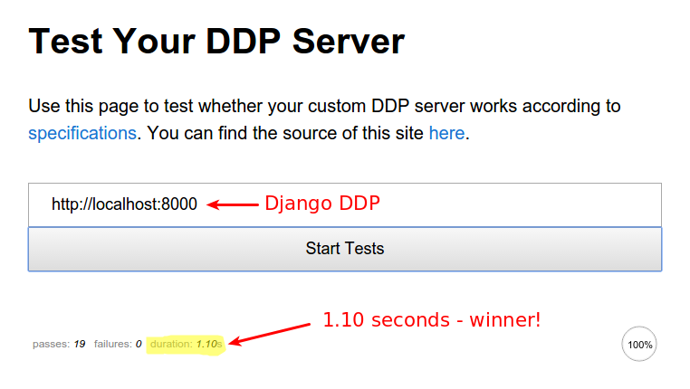

Django DDP
Realtime Django backend for Meteor
Created by Tyson Clugg / @tysonclugg github.com/commoncode/django-ddp
Motivations
I like Django, but it isn't realtime.
Meteor is realtime, but it's schemaless — ugh!
Django DDP recap
You missed/forgot my last Django DDP talk at MelbMeteor?
Oh well... 😉
Django DDP Basics
- Implements a DDP server, like Meteor.
- Replaces Meteor server — not running Node!
- Allows clients (browsers) to subscribe to publications.
- Pushes Django model updates in realtime via WebSockets.
- RPC method calls and responses.
Django DDP Limitations
- Doesn't serve Meteor client files... yet.
- Immature — research in progress!
- PostgreSQL only — this is a Good Thing™
Why not schemaless?
No schema means no consistency, resulting in bugs.
No referential integreity results in more bugs.
No transactions across collections — even more bugs!
PostgreSQL provides schemaless anyway (hstore, JSON).
Why PostgreSQL?
Is Postgres NoSQL Better Than MongoDB?

You bet it is!
High performance Python
ddptest.meteor.com
Meteor first...

ddptest.meteor.com
...now Django DDP

Asynchronous Notify
-
Already a part of the Django/PostgreSQL stack
- Unless you're a MySQL weenie 😛
- No new services/infrastructure to be deployed! 😄
-
Extended SQL syntax:
- NOTIFY <channel>, [optional payload];
- LISTEN <channel>;
-
Works with transactions
- Notification is sent after transaction is successfully committed
- Notification is not sent if transaction is rolled back
Demo time!
(Applause!)
Key learnings: Meteor
- Synchronised document ID generation is awesome! (latency compensation)
- Meteor password hashing sucks.
- Autopublish & insecure are dangerous. Meteor defaults help you shoot yourself in the foot.
Key learnings: Python/Django
- WebSocket support in Django is woeful (doesn't exist!)
- Adding packages to Django projects sucks (nothing like `meteor add foo`)
Acknowledgements
- MEERQAT
- Project sponsor - many thanks for allowing this to be released as open source!
- David Burles
- Expert guidance on how DDP works in Meteor.
- Brenton Cleeland
- Great conversations around how collections and publications can limit visibility of published documents to specific users.
- Muhammed Thanish
- Making the DDP Test Suite available.
Question time
github.com/commoncode/django-ddp